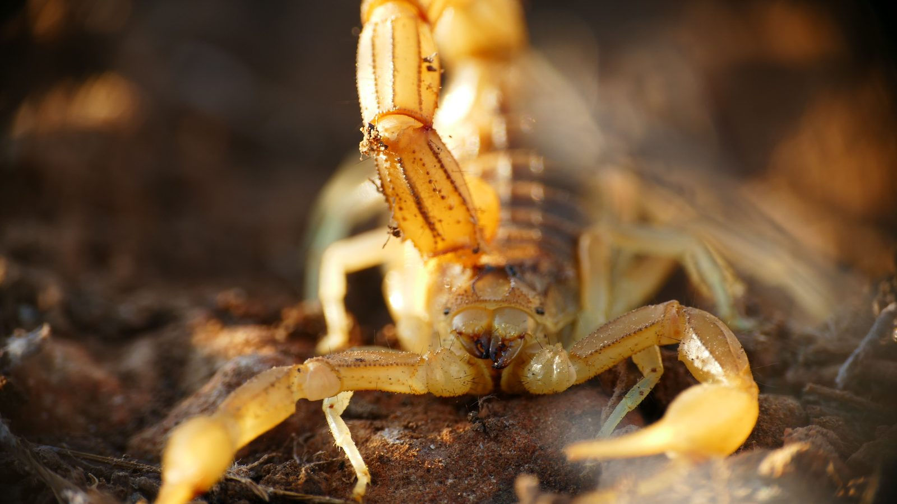

Itapema · Clima
Itapema · ClimaDefesa Civil espera de 100 a 150 milímetros de chuva em Itapema entre sábado e segunda
A chuva que chega é justamente quando as vistorias aumentam.
A Vigilância Ambiental registra quatro casos de picada no ano e diz que a fiscalização é mais educativa que punitiva. Quem encontrar um escorpião deve avisar pelo (47) 3185-2384, que atende também por WhatsApp.
Em 30 segundos · Modo de Leitura, formato original Santa Informa
Navegantes capturou 436 escorpiões em 2026.
Foram 4 casos de picada no ano.
A cada 10 vistorias, a equipe acha de 6 a 7 escorpiões.
O trabalho é da Vigilância Ambiental da Prefeitura.
A fiscalização é mais educativa que punitiva.
As vistorias aumentam no período de chuva.
Achado o foco, a visita é semanal até parar de aparecer.
Depois passa a quinzenal, mensal e anual.
O contato é o (47) 3185-2384, telefone e WhatsApp.
Meio AmbientePublicada em Redação Santa Informa

A Vigilância Ambiental de Navegantes capturou 436 escorpiões ao longo de 2026. No mesmo período, o município registrou quatro casos de picada. Os números são da Prefeitura de Navegantes, que divulgou o balanço na terça-feira, 25.
A conta da equipe é direta: a cada 10 vistorias, aparecem de 6 a 7 escorpiões. Quem explica o método é Diane Assunção, gerente da Vigilância Ambiental. Quando um imóvel dá resultado, a equipe volta toda semana até parar de encontrar bicho. Só então o intervalo abre para quinzenal, depois mensal e, por fim, anual.
Segundo a gerente, "a fiscalização tem um caráter mais educativo" do que punitivo. As vistorias são contínuas e ficam mais intensas nos períodos de chuva, que é quando o escorpião sai do esconderijo e aparece dentro de casa.
A orientação da Prefeitura tem três frentes. A primeira é limpar o terreno, tirando entulho, telha e tijolo empilhados. A segunda é vedar fresta em parede, rodapé, porta e janela. A terceira é não deixar lixo acumulado por mais de 24 horas. Quem encontrar um escorpião deve capturar com cuidado e acionar a Vigilância Ambiental na hora, pelo (47) 3185-2384, que atende por telefone e por WhatsApp.
Escorpião não respeita divisa de município. Navegantes está no mesmo trecho de litoral que Itapema, Porto Belo e Balneário Camboriú, com o mesmo clima, o mesmo ritmo de obra e o mesmo entulho de construção parado no fundo do terreno. O que a Vigilância de lá descreve é a rotina de qualquer cidade daqui.
E o calendário ajuda a entender o recado. A Defesa Civil espera de 100 a 150 milímetros de chuva em Itapema entre sábado e segunda, e chuva forte é justamente quando as vistorias aumentam em Navegantes. Terreno limpo e fresta vedada custam pouco e valem para os dois lados da divisa.
O resumo de 30 segundos está no topo e a versão completa é o texto acima. Aqui ficam as três leituras da casa sobre o mesmo assunto.
Clara, a otimista
Quatrocentos e trinta e seis capturas e quatro picadas no ano inteiro. Olhando assim, o trabalho está funcionando: acha muito bicho e quase ninguém se machuca.
E a parte boa é que a receita é barata. Terreno limpo, fresta vedada e lixo em dia não pedem verba nem obra. É o tipo de prevenção que qualquer morador consegue fazer no sábado de manhã.
Seu Prudêncio, o criterioso
Merece atenção a taxa de encontro. Seis a sete escorpiões a cada dez vistorias não é achado ocasional, é presença consolidada no ambiente urbano. Isso indica que o problema não está em imóvel isolado, e sim espalhado.
Vale acompanhar o que o balanço não mostra: em que bairros isso se concentra e quantas vistorias foram feitas para chegar aos 436. Sem o denominador, não dá para medir se a captura cresceu ou se apenas se fiscalizou mais. Uma sugestão útil seria publicar o mapa por bairro, que orienta o morador sem custar nada a mais.
Dito isso, o desenho do trabalho é bem feito. Visita semanal enquanto aparece bicho, depois quinzenal, mensal e anual, é protocolo de acompanhamento sério, e a escolha por orientar em vez de multar tende a trazer mais morador para o lado da solução do que para o do escondido.
Caco, o sarcástico
Quatrocentos e trinta e seis escorpiões capturados. E olha que ninguém convidou nenhum.
A Prefeitura diz que a fiscalização é mais educativa que punitiva. O escorpião, esse, continua sem ler o material didático.
A orientação é não deixar lixo acumulado por mais de 24 horas. Ou seja, a saída para o bicho da natureza é o mesmo conselho que a sua mãe já dava.
Fontes: Prefeitura de Navegantes, notícia publicada em 25 de agosto de 2026, com texto de Marília Cordeiro, trazendo os 436 escorpiões capturados em 2026, os quatro casos de picada registrados no ano, a proporção de 6 a 7 escorpiões encontrados a cada 10 vistorias, o telefone e WhatsApp (47) 3185-2384 da Vigilância Ambiental, as declarações da gerente Diane Assunção sobre o caráter educativo da fiscalização e sobre a intensificação nos períodos chuvosos, a escala de visitas semanais, quinzenais, mensais e anuais, e as três orientações de prevenção (limpeza de terreno com retirada de entulho, telha e tijolo, vedação de frestas em paredes, rodapés, portas e janelas, e lixo guardado por no máximo 24 horas). A foto que acompanha a publicação, de Vitória Costa, não foi reproduzida aqui. A previsão de 100 a 150 milímetros de chuva em Itapema entre sábado e segunda é da Defesa Civil de Itapema, publicada por este portal em 27 de agosto de 2026.
Itapema · ClimaA chuva que chega é justamente quando as vistorias aumentam.
 Porto Belo · Segurança
Porto Belo · SegurançaOutro balanço de serviço público de cidade vizinha.
 Navegantes · Trabalho
Navegantes · TrabalhoA mesma cidade, vista pelo mercado de trabalho.